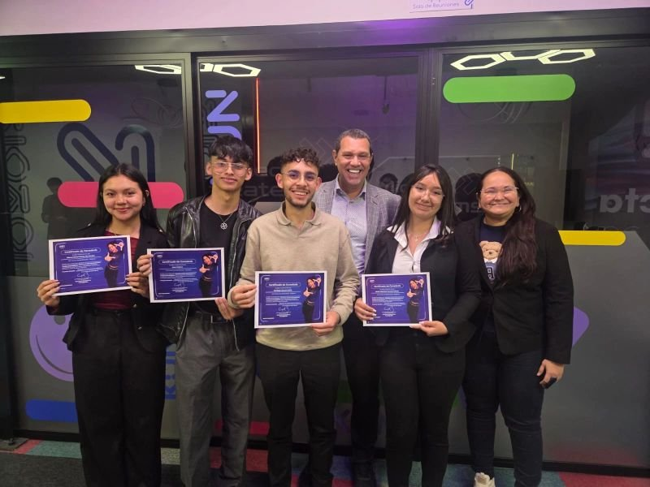

1.er Puesto Nacional
Semillero TechCare
XII Encuentro Nacional de Semilleros de Investigación (Mayo 2026)
Lideré como investigador en el Semillero TechCare el desarrollo conceptual de arquitecturas multiagente para la automatización de procesos ETL, enfocado en mejorar la calidad en la toma de decisiones para pymes.
- • Modelado Multiagente: Coordinación de roles autónomos para extracción, validación y consolidación de datos.
- • Modelos de Lenguaje & Prompts: Integración de LLMs mediante técnicas avanzadas de Prompt Engineering.
- • Aplicación Práctica: Eliminación de cuellos de botella manuales en el tratamiento de información empresarial.
